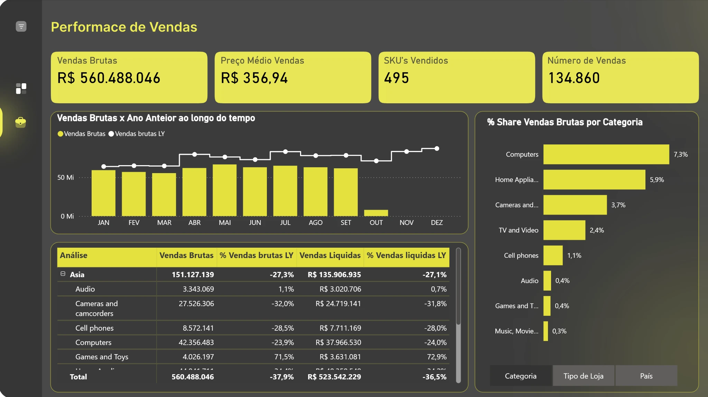
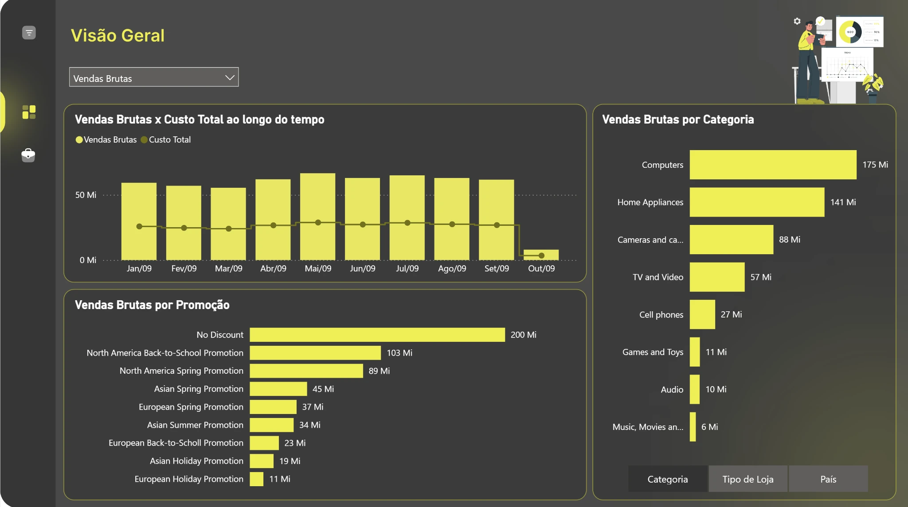
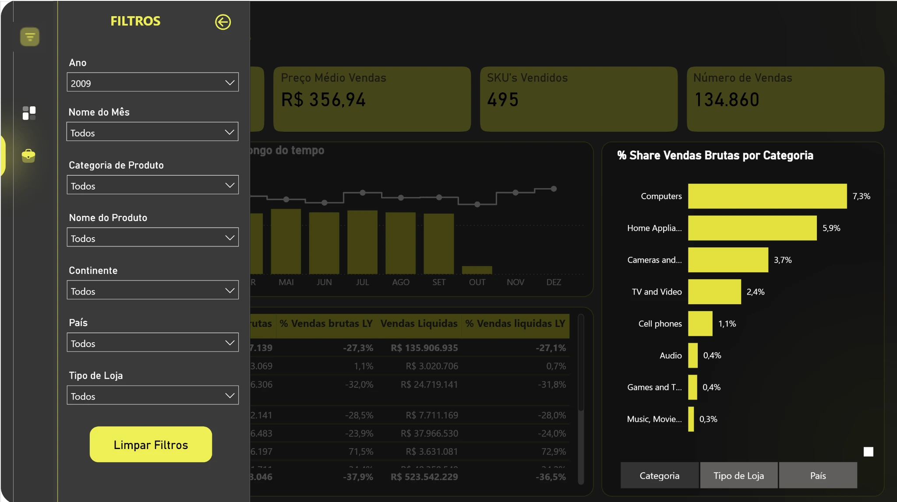

Análise de Performance de Vendas
Desafio de Power BI voltado à modelagem de dados, criação de indicadores comerciais em DAX e construção de painéis para análise de vendas, custos, promoções e categorias.
Telas do dashboard
Capturas do relatório desenvolvido para o desafio técnico.



O desafio
O exercício técnico solicitava partir de um conjunto de dados comerciais, definir os relacionamentos do modelo e construir medidas em DAX para avaliar vendas, custos, descontos, produtos, promoções e regiões. A proposta também incluía comparação entre períodos, regras de acesso por país e duas páginas de relatório com navegação e filtros.
O que desenvolvi
Estruturei duas páginas de análise no Power BI: uma visão consolidada de vendas, custos e promoções e outra dedicada ao desempenho comercial, com indicadores, comparação temporal e participação das categorias. Organizei os filtros em um menu lateral retrátil para permitir a exploração por período, produto e localização.
O que o projeto demonstra
- Organização de indicadores comerciais em relatórios interativos.
- Comparação de vendas e custos ao longo do tempo.
- Visões por categorias, promoções e regiões.
- Uso de tabelas analíticas e segmentação para exploração dos dados.
- Estrutura visual com navegação e filtros retráteis.
Conhecimentos avaliados no desafio
O enunciado abrangia modelagem, cálculos, segurança e experiência de uso do relatório. Os pontos abaixo descrevem os requisitos da avaliação, não uma auditoria técnica do arquivo PBIX.
Modelagem de dados
Criação dos relacionamentos entre tabelas para integrar vendas, produtos, localidades, promoções e calendário.
Medidas DAX
Contagem distinta de vendas, volume, vendas brutas e líquidas, custos, preços médios, descontos e média diária.
Inteligência temporal
Comparação com o ano anterior (LY), acumulado no ano (YTD) e comparação LY ajustada ao intervalo de dados disponível.
Participação e ranking
Shares por categoria e grupos, ranking de promoções por vendas líquidas e participação dos dez produtos líderes de cada ano.
Segurança RLS
Definição de uma regra estática para Estados Unidos e de uma regra dinâmica para usuários associados a três países.
Experiência do relatório
Duas páginas, navegação entre abas, filtros retráteis e sincronizados, alternância de medidas e gráficos com segmentação dinâmica.